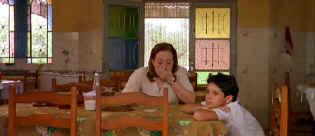

|
Central
Station(SE)/A-,B+
|
|
Columbia/1998/106m/ANA
2.35 |
You
can feel the great passion of the filmmakers in Central
Station. Depictions of the harsh world are never overblown.
This unusual story gets going with the hard-edged poignancy of
reality. In the crowded central train station of Rio de Janeiro
people move with an impersonal frenzy. Amidst the pushing
crowds, a woman sits at a writing table and a line of people pay
her to write letters to their dear ones. Close-ups of the
patrons telling the woman what to write are beautifully telling.
The world of Central Station unfolds with immediacy and
elegance.
 |
|
Sharing a break in
the trip. ©Columbia |
The main characters of Central Station are
introduced right at the table in the station. Dora, the letter
writer, records the words of her patrons with a certain
detachment. Josué arrives at the table with his mother who has
a letter written to a long absent father. They return a second
time to change the letter and thus it establishes their
importance. What unfolds from this meeting in the anonymous
train station is anything but anonymous. Central Station
takes you deep into Brazil, from the city to the countryside, in
the company of two wonderful people. It’s unusual drama and
unusual filmmaking.
Walter Salles directs the
screenplay by Marcos Bernstein and Joao Emanuel Carneiro with
wonderful sensitivity. It’s
interesting to note Salles’ choice of 2.35 scope aspect ratio
for Central Station. Personal and small dramas often
benefit from use of the closer 1.33, but Central Station
is not just about these two characters. It’s about Brazil and
the landscape takes on a great significance. The scenes of Rio
are amazingly powerful, yet as Josué and Dora travel across the
country on a bus, the landscapes present magnificent visages.
Salles’ camera is free from artifice as well. His
unique perspectives lend the weight of truth to Central
Station. Whether he chooses to follow his character in
conversation from the back or frame them within the bounds of
the background, Salles understands instinctively the language of
film.
Young Vinicius de Oliveira who plays
Josué is simply amazing. The young boy, who was found by Salles
as a shoeshine boy in Rio, brings honest emotional intensity to
this role of a boy on the journey of his life. The wonderful
Fernanda Montenegro is Dora. Her subtle command of her thespian
tools makes the changes in her character almost imperceptible
and totally natural. Salles is great with his actors. The small
parts are perfectly cast and the actors totally believable.
I am delighted Columbia made Central
Station a special editon. The audio commentary features a
warm variety of observations from Walter Salles, Fernanda
Montenegro and producer Arthur Cohn. Cohn sites the three
premises his mentor Vittorio de Sica gave him:
One has to cast a film with authentic people. You must
shoot authentically where the story is centered. Never to listen
to advice. You can see this in the filmmaking.
The widescreen anamorphic DVD has a
warm, intimate look. Colors are too orange, though this does
emphasize the emotional feeling of the film. The image is
consistently sharp. The panoramas have excellent depth. Contrast
is not dramatic, emphasizing the character within their
environment. The score by Jaques
Morelembaum is nicely recorded and enriches the film experience.
The yellow English subtitles appear both on and just below the
image.
|
|